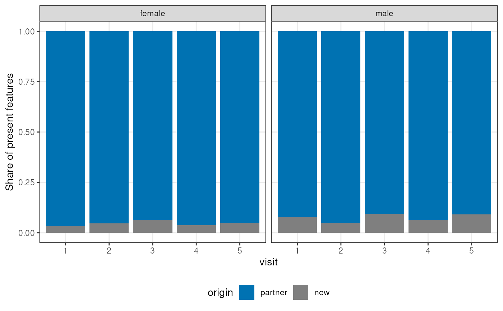
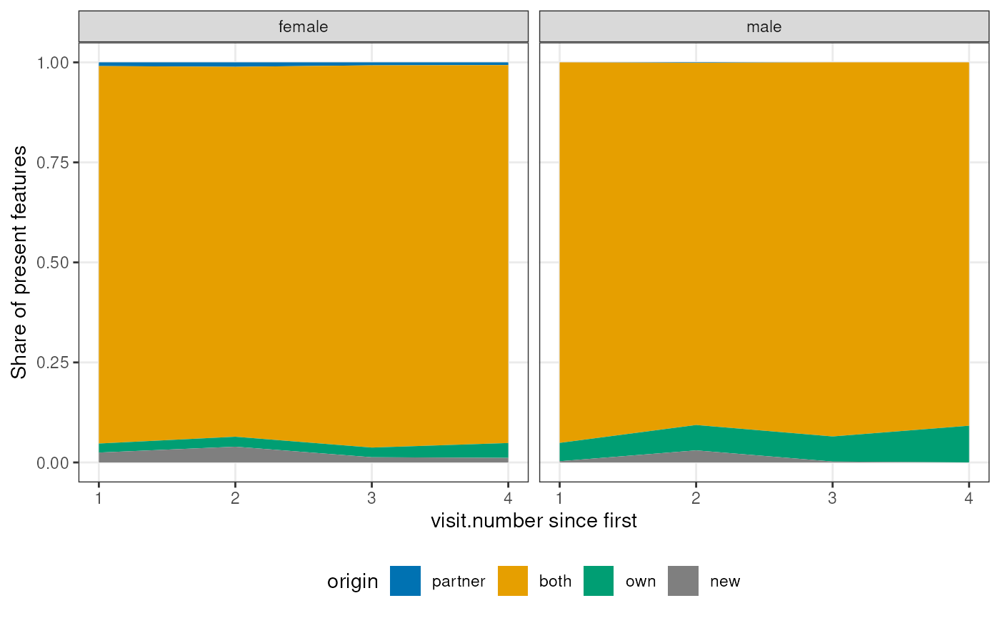

Plot the origin of features over time
Source:R/AllGenerics.R, R/plotOrigin.R, R/zzz-mae.R
plotOrigin.RdplotOrigin() stacks, for each sample of a subject linked to a
partner, such as a recipient to the donor of a faecal transplant or an
infant to its mother, the shares of its features that were found in the
partner only, in the subject before an event only, in both, or in
neither (new).
Usage
plotOrigin(x, ...)
# S4 method for class 'SummarizedExperiment'
plotOrigin(
x,
time.col,
group,
partner.col,
assay.type = "counts",
detection = 0,
value = c("occupancy", "abundance"),
align.to = NULL,
layout = c("bar", "area"),
level = c("subject", "group"),
group.by = NULL,
max.gap = NULL,
...
)
# S4 method for class 'MultiAssayExperiment'
plotOrigin(x, ..., experiment = 1L)Arguments
- x
a
SummarizedExperimentobject.- ...
additional arguments passed to
geom_colorgeom_ribbon.- time.col
Character scalar. Specifies the column fromcolData(x)that contains sampling times: numeric,Date,POSIXctor a factor of visits. Only the times of linked subjects are used.- group
Character scalar. Specifies the column fromcolData(x)that identifies subjects.- partner.col
Character scalar. Specifies the column fromcolData(x)that gives the partner of each subject, a value of thegroupcolumn, on all its samples, andNAon the samples of partners and of subjects without one.- assay.type
Character scalar. Specifies the assay of abundances. (Default:"counts")- detection
Numeric scalar. A feature is present in a sample when its value is above this. (Default:0)- value
Character scalar. Stacks the shares of the present features ("occupancy") or of their abundance ("abundance"). (Default:"occupancy")- align.to
Character scalar. Specifies the column fromcolData(x)with the time of an event for each linked subject, such as the transplant, in the units oftime.col. The samples of a subject at or before its event are its own reference, and time is drawn relative to the event. IfNULL, subjects have no reference, and features are from the partner or new. Not available for visits. (Default:NULL)- layout
Character scalar. Draws stacked bars ("bar") or stacked areas ("area"). (Default:"bar")- level
Character scalar. Plots each subject ("subject") or the mean shares of eachgroup.bygroup at each time ("group"). (Default:"subject")- group.by
Character scalar. Specifies the column fromcolData(x)that groups subjects whenlevel = "group". IfNULL, all subjects form one group. (Default:NULL)- max.gap
Numeric scalar. Breaks areas where consecutive times of a panel are further apart than this, intime.colunits. For visits,NULLbreaks them at visits without a sample; otherwiseNULLnever breaks them. (Default:NULL)- experiment
Character scalarorinteger scalar. For aMultiAssayExperiment, the experiment to plot; its samples get thecolDataofx. (Default:1L)
Details
A feature of a sample is from the partner when it is present in any
sample of the partner, and from the subject ("own") when it is
present in any reference sample of the subject; "both" when
both hold, and "new" when neither does. All samples of the
partner count, whatever their time; subset x to restrict them.
Samples without present features are left out.
Strain sharing is computed from strain profiles upstream; with a strain assay, the plot shows the origin of strains, as in Aggarwala et al. (2021, doi:10.1038/s41564-021-00966-0, Fig. 3c), Schmidt et al. (2022, doi:10.1038/s41591-022-01913-0, Fig. 2a) and Ferretti et al. (2018, doi:10.1016/j.chom.2018.06.005, Fig. 2).
See also
plotPartner for the dissimilarity to the
partner.
Examples
# Illustration only: hitchip1006 has no linked design. Subjects are
# paired at random, so the shares show sharing by chance.
data("hitchip1006", package = "miaTime")
tse <- hitchip1006
# Some profiles are stored twice; keep the first copy
counts <- SummarizedExperiment::assay(tse, "counts")
tse <- tse[, !duplicated(t(counts))]
tse <- tse[, tse$subject %in% names(which(table(tse$subject) >= 3))]
tse$visit <- factor(ave(tse$time, tse$subject, FUN = rank))
subjects <- unique(tse$subject)
half <- seq_len(length(subjects) %/% 2)
partner <- setNames(subjects[half], subjects[-half][half])
tse$partner <- unname(partner[as.character(tse$subject)])
# Mean shares of features from the partner at each visit, by sex
plotOrigin(tse, time.col = "visit", group = "subject",
partner.col = "partner", level = "group", group.by = "sex")

# Each subject's first visit as its reference, as areas
tse$visit.number <- as.integer(tse$visit)
tse$first <- 1L
plotOrigin(tse, time.col = "visit.number", group = "subject",
partner.col = "partner", align.to = "first", layout = "area",
level = "group", group.by = "sex")
